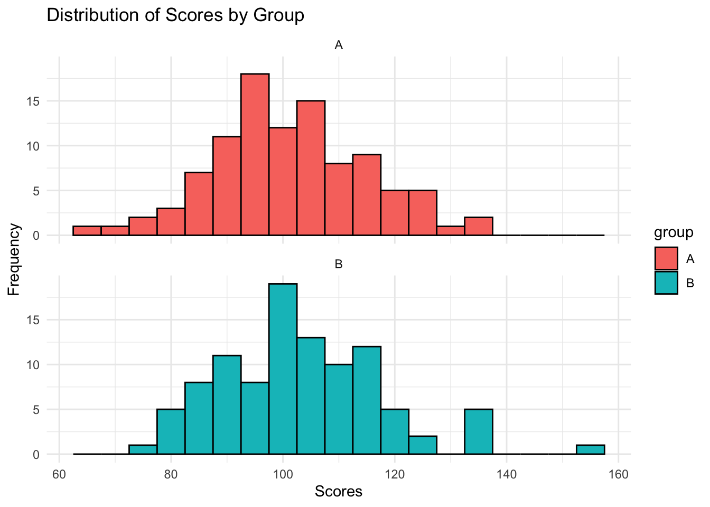

![]()
# Bob leBob
# 29 Feb 2024
# bob@lebob.fr
#. Lab 02 - Simulating The Five Basic Structures of Cauality
Readings
- Barrett M (2023). ggdag: Analyze and Create Elegant Directed Acyclic Graphs. R package version 0.2.7.9000, https://github.com/malcolmbarrett/ggdag
- “An Introduction to Directed Acyclic Graphs”, https://r-causal.github.io/ggdag/articles/intro-to-dags.html
- “Common Structures of Bias”, https://r-causal.github.io/ggdag/articles/bias-structures.html
Key concepts for the test(s):
- Confounding
- Causal Directed Acyclic Graph
- Five Elementary Causal Structures
- d-separation
- Four Rules of Confounding Control
Download Your Laboratory R Script Here
Assuming you have installed R and RStudio:
Download the R script for Lab 01 by clicking the link below. This script contains the code you will work with during your laboratory session.
After downloading, open RStudio.
In RStudio, create a new R script file by going to
File > New File > R Script.Create a new
.Rfile called02-lab.Rand provide your name, contact, data, and a brief title such as “Rimulating the basic five basic causal structures in R”
Example:
Copy and paste the code chunks below from your computer onto the script during class.
Save the new R script file in a clearly defined project directory folder for easy access during the lab.
Bring your computer to the lab.
Part 1: Seminar
Overview
- Understand basic features of causal diagrams: definitions and applications
- Introduction to the five elementary causal structures
- Lab: Simulation and Regression
Review
- Psychological research begins with two questions:
- What do I want to know?
- For which population does this knowledge generalise?
This course considers how to ask this psychological questions that pertain to populations with different characteristics
In psychological research, we typically ask questions about the causes and consequences of thought and behaviour - “What if?” questions (Hernan and Robins 2024).
The following concepts help us to describe two distinct failure modes in psychological research when asking “What if?” questions:
The Concept of External Validity: the extent to which the findings of a study can be generalised to other situations, people, settings, and time periods. That is, we want to know if our findings carry beyond the sample population to the target population. We fail when our results do not generalise as we think. More fundamental, we fail when we have not clearly defined our question or our target population.
The Concept of Internal Validity: the extent to which the associations we obtain from data reflect causality. In psychological science, we use the terms “independent variable” and “dependent variable.” Sometimes we use the terms “exogenous variable” and “endogenous variable.” Sometimes we use the term “predictor variable” to describe the “dependent” or “endogenous” variable. These words are confusing. When asking “What if?” questions, we want to understand what would happen were we to intervene. In this course, we will use the term “treatment” or equivalently the term “exposure” to denote the intervention; we will use the term “outcome” to denote the effect of an intervention.1
- During the first part of the course, our primary focus will be on challenges to internal validity from confounding bias.
Definitions
Definition 1 We say internal validity is compromised if the association between the treatment and outcome in a study does not consistently reflect causality in the sample population as it is defined at baseline.
Definition 2 We say external validity is compromised if the association between the treatment and outcome in a study does not consistently reflect causality in the target population as it is defined at baseline.
The concept of “confounding bias” helps to clarify what it is at stake when evaluating the internal validity of a study. As we shall see, there are several equivalent definitions of “confounding bias,” which we will describe during the upcoming weeks.
The definition of confounding bias that we will examine today is:
Definition 3 We say there is confounding-bias if there is an open back-door path between the treatment and outcome, or if that path between the treatment and outcome is blocked.
Today, our purpose will be to clarify the meaning of each term in this definition. To that end, we will introduce the five elementary graphical structures and explain the four elementary rules that allow investigators to to move from the causal assumptions encoded in a causal diagram to an assessment of the challenges and opportunities for obtaining internal validity from data.
Introduction to Causal Diagrams.
Causal diagrams, also called causal graphs, Directed Acyclic Graphs, and Causal Directed Acyclic Graphs, are graphical tools whose primary purpose is to enable investigators to detect confounding biases.
Their primary purpose is to equip investigators with strategies for addressing the demands of internal validity: the associations we obtain in our analysis consistently estimate causal associations for the population of interest. We will assume that the population of interest – the target population – is the sample population at baseline. We do this to better distinguish between the concepts of internal and external validity. Later, we will relax this assumption.
We begin with by stating variable naming conventions that we will use throughout this course.
Lab – Regression in R: Simulate The Five Fundamental Structures of Causality
Simulating Data in R: Outcome ~ Treatment
Step 1: Set Up Your R Environment
Ensure R or RStudio is installed and open.
Step 2: Set a Seed for Reproducibility
To ensure that your simulated data can be reproduced exactly. Again, it is good practice to set a seed before generating random data. This makes your analyses and simulations replicable.
set.seed(123) # use any number to set the seedStep 3: Simulate Continuous Data: One Variable
To simulate continuous data, you can use functions like rnorm() for normal distributions, runif() for uniform distributions, etc. Here we simulate 100 normally distributed data points with a mean of 50 and a standard deviation of 10:
n <- 100 # number of observations
mean <- 50
sd <- 10
data_continuous <- rnorm(n, mean, sd)
# view
head(data_continuous)[1] 44.39524 47.69823 65.58708 50.70508 51.29288 67.15065# view
hist(data_continuous)Step 4: Simulating Categorical Data
Categorical data can be simulated using the sample() function. Here, we simulate a binary variable (gender) with two levels for 100 observations. There is equal probability of assignment.
levels <- c("Male", "Female")
data_categorical <- sample(levels, n, replace = TRUE)
# view
head(data_categorical)[1] "Female" "Female" "Female" "Male" "Female" "Female"To generate categories with unequal probabilities, you can use the sample() function by specifying the prob parameter, which defines the probability of selecting each level. This allows for simulating categorical data where the distribution between categories is not uniform.
Below is an example that modifies your initial code to create a categorical variable with unequal probabilities for “Male” and “Female”. Here is an example with unequal probabilities:
# Define levels and number of observations
levels <- c("Male", "Female")
n <- 100 # total number of observations
# Generate categorical data with unequal probabilities
data_categorical_unequal <- sample(levels, n, replace = TRUE, prob = c(0.3, 0.7))
# View the first few elements
head(data_categorical_unequal)In this example, the prob parameter is set to c(0.3, 0.7), indicating a 30% probability for “Male” and a 70% probability for “Female”. This results in a simulated dataset where approximately 30% of the observations are “Male” and 70% are “Female”, reflecting the specified unequal probabilities. Adjust the probabilities as needed to fit the scenario you wish to simulate.
set.seed(123) # reproducibility
groupA_scores <- rnorm(100, mean = 100, sd = 15) # simulate scores for group A
groupB_scores <- rnorm(100, mean = 105, sd = 15) # simulate scores for group B
# ombine into a data frame
scores_df <- data.frame(Group = rep(c("A", "B"), each = 100), Scores = c(groupA_scores, groupB_scores))
# commands to view data
str(scores_df)'data.frame': 200 obs. of 2 variables:
$ Group : chr "A" "A" "A" "A" ...
$ Scores: num 91.6 96.5 123.4 101.1 101.9 ...# summary of columns
summary(scores_df) Group Scores
Length:200 Min. : 65.36
Class :character 1st Qu.: 92.59
Mode :character Median :101.38
Mean :102.37
3rd Qu.:111.59
Max. :153.62 # top rows
head(scores_df) Group Scores
1 A 91.59287
2 A 96.54734
3 A 123.38062
4 A 101.05763
5 A 101.93932
6 A 125.72597# bottom rows
tail(scores_df) Group Scores
195 B 85.33798
196 B 134.95820
197 B 114.01063
198 B 86.23093
199 B 95.83251
200 B 87.21780Visualising simulated data
Understanding your data visually is as important as the statistical analysis itself. Let’s create a simple plot to compare the score distributions between the two groups.
if (!require(ggplot2)) {
install.packages("ggplot2")
library(ggplot2)
} else {
library(ggplot2)
}
# plot your data
ggplot(scores_df, aes(x = Group, y = Scores, fill = Group)) +
geom_boxplot() +
theme_minimal() +
labs(title = "Score Distribution by Group", x = "Group", y = "Scores")Histogram
library(ggplot2)
# H=histograms for both groups
ggplot(scores_df, aes(x = Scores, fill = Group)) +
geom_histogram(binwidth = 5, color = "black") +
labs(title = "Distribution of Scores",
x = "Scores",
y = "Frequency") +
facet_wrap(~Group, ncol = 1)
Excercise 1
Modify the simulation parameters to change each group’s mean and standard deviation. Observe how these changes affect the distribution.
Go to the histogram. Experiment with different bin widths. In your own words, how do large and small numbers speak differently to the data? When might you use one histogram and not another.
Simulating data for familiar statistical tests
# simulate some data
data <- rnorm(100, mean = 5, sd = 1) # 100 random normal values with mean = 5
# perform one-sample t-test
# testing if the mean of the data is reliably different from 4
t.test(data, mu = 4)
One Sample t-test
data: data
t = 11.796, df = 99, p-value < 2.2e-16
alternative hypothesis: true mean is not equal to 4
95 percent confidence interval:
4.931989 5.308942
sample estimates:
mean of x
5.120465 # simulate data for two groups
group1 <- rnorm(50, mean = 5, sd = 1) # 50 random normal values, mean = 5
group2 <- rnorm(50, mean = 5.5, sd = 1) # 50 random normal values, mean = 5.5
# two-sample t-test
t.test(group1, group2)
Welch Two Sample t-test
data: group1 and group2
t = -2.0293, df = 97.95, p-value = 0.04514
alternative hypothesis: true difference in means is not equal to 0
95 percent confidence interval:
-0.837548023 -0.009343886
sample estimates:
mean of x mean of y
5.002054 5.425500 # simulate pre-test and post-test scores
pre_test <- rnorm(30, mean = 80, sd = 10)
post_test <- rnorm(30, mean = pre_test + 5, sd = 5) # assume an increase
# perform paired t-test
t.test(pre_test, post_test, paired = TRUE)
Paired t-test
data: pre_test and post_test
t = -4.7761, df = 29, p-value = 4.725e-05
alternative hypothesis: true mean difference is not equal to 0
95 percent confidence interval:
-6.785042 -2.716352
sample estimates:
mean difference
-4.750697 Exercise 3: Linear Regression Analysis with Simulated Data
Task 1: Simulating Continuous Treatment Variable
# library for enhanced model reporting
library(parameters)
# set seed for reproducibility
set.seed(123) # choose a seed number for consistency
# define the number of observations
n <- 100 # total observations
# simulate continuous treatment variable A
a <- rnorm(n, mean = 50, sd = 10) # mean = 50, sd = 10 for A
# specify the effect size of A on Y
beta_a <- 2 # explicit effect size
# simulate outcome variable Y including an error term
y <- 5 + beta_a * a + rnorm(n, mean = 0, sd = 20) # Y = intercept + beta_a*A + error
# create a dataframe
df <- data.frame(a = a, y = y)
# view the structure and first few rows of the dataframe
str(df)
head(df)Task 2: Exploring the Simulated Data
Before moving on to regression analysis, ensure students understand the structure and distribution of the simulated data. Encourage them to use summary(), plot(), and other exploratory data analysis functions.
Task 3: Regression Analysis of Continuous Treatment Effect
# perform linear regression of Y on A
fit <- lm(y ~ a, data = df)
# display the regression model summary
summary(fit)
# report the model in a reader-friendly format
report_fit <- report::report(fit)
print(report_fit)
# optionally, visualize the relationship
plot(df$a, df$y, main = "Scatterplot of Y vs. A", xlab = "Treatment (A)", ylab = "Outcome (Y)")
abline(fit, col = "red")Equivalence of ANOVA and Regression
We will simulate data in R to show that a one-way ANOVA is a special case of linear regression with categorical predictors. We will give some reasons for preferring regression (in some settings).
Method
First, we simulate a dataset with one categorical independent variable with three levels (groups) and a continuous outcome (also called a “dependant”) variable. This setup allows us to apply both ANOVA and linear regression for comparison.
# nice tables
if (!require(parameters)) {
install.packages("parameters")
library(parameters)
} else {
library(parameters)
}
set.seed(321) # reproducibility
n <- 90 # total number of observations
k <- 3 # number of groups
# simulate independent variable (grouping factor)
group <- factor(rep(1:k, each = n/k))
# inspect
str(group) Factor w/ 3 levels "1","2","3": 1 1 1 1 1 1 1 1 1 1 ...# simulate outcome variable
means <- c(100, 100, 220) # Mean for each group
sd <- 15 # Standard deviation (same for all groups)
# generate random data
y <- rnorm(n, mean = rep(means, each = n/k), sd = sd)
# make data frame
df_1 <- cbind.data.frame(y, group)
anova_model <- aov(y ~ group, data = df_1)
# summary(anova_model)
table_anova <- model_parameters(anova_model)
# report the model
report::report(anova_model)The ANOVA (formula: y ~ group) suggests that:
- The main effect of group is statistically significant and large (F(2, 87) =
689.11, p < .001; Eta2 = 0.94, 95% CI [0.92, 1.00])
Effect sizes were labelled following Field's (2013) recommendations.Next, we analyse the same data using linear regression. In R, regression models automatically convert categorical variables into dummy variables.
# for tables (just installed)
library(parameters)
# regression model
fit <- lm(y ~ group, data = df_1)
# uncomment if you want an ordinary summary
# summary(regression_model)
table_fit <- parameters::model_parameters(fit)
# print table
table_fitParameter | Coefficient | SE | 95% CI | t(87) | p
--------------------------------------------------------------------
(Intercept) | 101.22 | 2.60 | [ 96.06, 106.39] | 38.98 | < .001
group [2] | -0.80 | 3.67 | [ -8.10, 6.50] | -0.22 | 0.827
group [3] | 117.67 | 3.67 | [110.37, 124.97] | 32.04 | < .001library(parameters)
library(report)
# report the model
report_fit <- report_parameters(fit)
#print
report_fit - The intercept is statistically significant and positive (beta = 101.22, 95% CI [96.06, 106.39], t(87) = 38.98, p < .001; Std. beta = -0.68, 95% CI [-0.76, -0.59])
- The effect of group [2] is statistically non-significant and negative (beta = -0.80, 95% CI [-8.10, 6.50], t(87) = -0.22, p = 0.827; Std. beta = -0.01, 95% CI [-0.14, 0.11])
- The effect of group [3] is statistically significant and positive (beta = 117.67, 95% CI [110.37, 124.97], t(87) = 32.04, p < .001; Std. beta = 2.04, 95% CI [1.91, 2.17])Upshot
ANOVA partitions variance into between-group and within-group components, while regression models the mean of the dependent variable as a linear function of the independent (including categorical) variables. For many questions, ANOVA is appropriate, however, when we are comparing groups, we often want a finer-grained interpretation. Regression is built for obtaining this finer grain understanding. We will return to regression over the next few weeks and use regression to hone your skills in R. Later, Along the way, you’ll learn more about data visualisation, modelling, and reporting.
# graph the output of the parameters table
# visualisation
plot(table_fit)
Exercise 2
Perform a linear regression analysis using R. Follow the detailed instructions below to simulate the necessary data, execute the regression, and report your findings:
- Simulate Data:
- Generate two continuous variables,
YandA, withn = 100observations each. - The variable
Ashould have a mean of50and a standard deviation (sd) of10.
- Generate two continuous variables,
- Define the Relationship:
- Simulate the variable
Ysuch that it is linearly related toAwith a specified effect size. The effect size ofAonYmust be explicitly defined as2.
- Simulate the variable
- Incorporate an Error Term:
- When simulating
Y, include an error term with a standard deviation (sd) of20to introduce variability.
- When simulating
- Regression Analysis:
- Use the
lm()function in R to regressYonA. - Ensure the regression model captures the specified effect of
AonY.
- Use the
- Report the Results:
- Output the regression model summary to examine the coefficients, including the effect of
AonY, and assess the model’s overall fit and significance.
- Output the regression model summary to examine the coefficients, including the effect of
Here is a template to get you started. Copy the code and paste it into your R script.
library(parameters)
# seed for reproducibility
set.seed( ) # numbers go in brackets
# number of observations
n <- # number goes here
# simulate data for variable A with specified mean and sd
A <- rnorm(n,
mean = , # set your number here
sd = )# set your number here
# define the specified effect size of A on Y
beta_A <- # define your effect with a number here
# simulate data and make data frame in one step
df_3 <- data.frame(
# simulate data for variable A with specified mean and sd
A = A, # from above
Y = 5 + beta_A * A + rnorm(n, mean = 0, sd = 20) # effect is intercept + ...
)
# view
head(df_3)
str(df_3)
# linear regression of Y on A
fit_3 <- lm(Y ~ A, data = df_3)
# results (standard code)
# summary(model)
# time saving reports
parameters::model_parameters(fit_3)
report(fit_3)Step 5: Simulating Data Frames
Data frames are used in R to store data tables. To simulate a dataset with both continuous and categorical data, you can combine the above steps:
# create a data frame with simulated data for ID, Gender, Age, and Income
data_frame <- data.frame(
# generate a sequence of IDs from 1 to n
ID = 1:n,
# randomly assign 'Male' or 'Female' to each observation
Gender = sample(c("Male", "Female"), n, replace = TRUE),
# simulate 'Age' data: normally distributed with mean 30 and sd 5
Age = rnorm(n, mean = 30, sd = 5),
# simulate 'Income' data: normally distributed with mean 50000 and sd 10000
Income = rnorm(n, mean = 50000, sd = 10000)
)Note that you can sample probabilistically for your groups
n <- 100 # total number of observations
# sample 'Gender' with a 40/60 proportion for Male/Female
Gender = sample(c("Male", "Female"), n, replace = TRUE, prob = c(0.4, 0.6))More complexity
# set the number of observations
n <- 100
# simulate the 'Age' variable
mean_age <- 30
sd_age <- 5
Age <- rnorm(n, mean = mean_age, sd = sd_age)
# define coefficients explicitly
intercept <- 20000 # Intercept for the income equation
beta_age <- 1500 # Coefficient for the effect of age on income
error_sd <- 10000 # Standard deviation of the error term
# simulate 'Income' based on 'Age' and defined coefficients
Income <- intercept + beta_age * Age + rnorm(n, mean = 0, sd = error_sd)
# create a data frame to hold the simulated data
data_complex <- data.frame(Age, Income)Step 7: Visualising Simulated Data
Visualising your simulated data can help understand its distribution and relationships. Use the ggplot2 package for this:
library(ggplot2)
ggplot(data_complex, aes(x = Age, y = Income)) +
geom_point() +
theme_minimal() +
labs(title = "Simulated Age vs. Income", x = "Age", y = "Income")
Practice
Simulating data is a powerful method to understand statistical concepts and data manipulation. Let’s simulate a simple dataset representing scores from two cultural groups.
- Data simulation:
You’ve learned to simulate datasets in R. This is a foundational skill for exploring statistical concepts and data manipulation techniques. Congratulations!
Appendix A: Solutions
Solution Excercise 2: simulate data and regression reporting
library(parameters)
# seed for reproducibility
set.seed(12345)
# number of observations
n <- 100
# simulate data for variable A with specified mean and sd
A <- rnorm(n, mean = 50, sd = 10)
# define the specified effect size of A on Y
beta_A <- 2
# simulate data and make data frame in one step
df_3 <- data.frame(
# simulate data for variable A with specified mean and sd
A = rnorm(n, mean = 50, sd = 10),
Y = 5 + beta_A * A + rnorm(n, mean = 0, sd = 20)
)
# view
head(df_3) A Y
1 52.23925 87.98766
2 38.43777 106.60413
3 54.22419 107.68437
4 36.75245 117.09730
5 51.41084 133.74473
6 44.63952 70.74512str(df_3)'data.frame': 100 obs. of 2 variables:
$ A: num 52.2 38.4 54.2 36.8 51.4 ...
$ Y: num 88 107 108 117 134 ...# Perform linear regression of Y on A
fit_3 <- lm(Y ~ A, data = df_3)
# Report the results of the regression
# summary(model)
# report
parameters::model_parameters(fit_3)Parameter | Coefficient | SE | 95% CI | t(98) | p
--------------------------------------------------------------------
(Intercept) | 109.17 | 14.62 | [80.17, 138.18] | 7.47 | < .001
A | -3.80e-03 | 0.28 | [-0.57, 0.56] | -0.01 | 0.989 report(fit_3)We fitted a linear model (estimated using OLS) to predict Y with A (formula: Y
~ A). The model explains a statistically not significant and very weak
proportion of variance (R2 = 1.83e-06, F(1, 98) = 1.79e-04, p = 0.989, adj. R2
= -0.01). The model's intercept, corresponding to A = 0, is at 109.17 (95% CI
[80.17, 138.18], t(98) = 7.47, p < .001). Within this model:
- The effect of A is statistically non-significant and negative (beta =
-3.80e-03, 95% CI [-0.57, 0.56], t(98) = -0.01, p = 0.989; Std. beta =
-1.35e-03, 95% CI [-0.20, 0.20])
Standardized parameters were obtained by fitting the model on a standardized
version of the dataset. 95% Confidence Intervals (CIs) and p-values were
computed using a Wald t-distribution approximation.What You Have Learned
- Data simulation:
You’ve learned to simulate datasets in R. This is a foundational skill for exploring statistical concepts and data manipulation techniques. Congratulations!
- Data visualisation:
You’ve begun data visualising data through boxplots and histograms and coefficient plots, which is crucial for analysing and communicating statistical findings.
Statistical tests: You’ve conducted basic statistical tests, including t-tests and ANOVA, gaining insights into comparing means across groups.
Understanding ANOVA and regression:
You’ve explored the equivalence of ANOVA and regression analysis, learning how these methods can be applied to analyse and interpret data effectively.
For more information about the packages used here:
ggplot2: A system for declaratively creating graphics, based on The Grammar of Graphics.
Parameters package: Provides utilities for processing model parameters and their metrics.
Report package: Facilitates the automated generation of reports from statistical models.
Appendix A: How ANOVA can deliever the functionality of Linear Regressions
We can get group comparisons with ANOVA, for example:
# Conduct Tukey's HSD test for post-hoc comparisons
tukey_post_hoc <- TukeyHSD(anova_model)
# Display the results
print(tukey_post_hoc) Tukey multiple comparisons of means
95% family-wise confidence level
Fit: aov(formula = y ~ group, data = df_1)
$group
diff lwr upr p adj
2-1 -0.8030143 -9.560281 7.954253 0.9739971
3-1 117.6732276 108.915961 126.430495 0.0000000
3-2 118.4762419 109.718975 127.233509 0.0000000plot(tukey_post_hoc)
Regression and ANOVA are equivalent
References
Hernan, M. A., and J. M. Robins. 2024. Causal Inference: What If? Chapman & Hall/CRC Monographs on Statistics & Applied Probab. Taylor & Francis. https://www.hsph.harvard.edu/miguel-hernan/causal-inference-book/.
Footnotes
“What if?” questions implicitly invoke the idea of intervening on the world. “If we did this, then what would happen to that…?” Our preferred terminology reflects our interest in the effects of interventions.↩︎